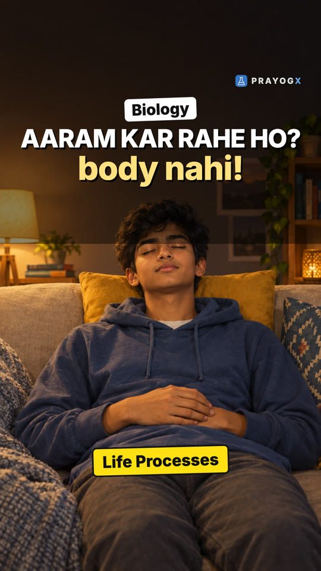
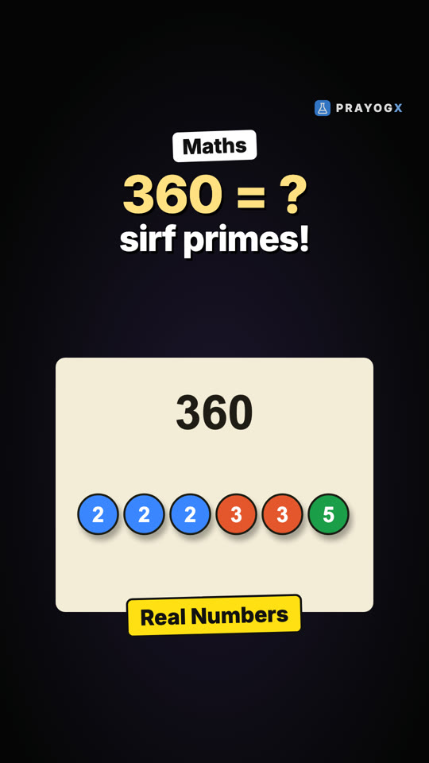
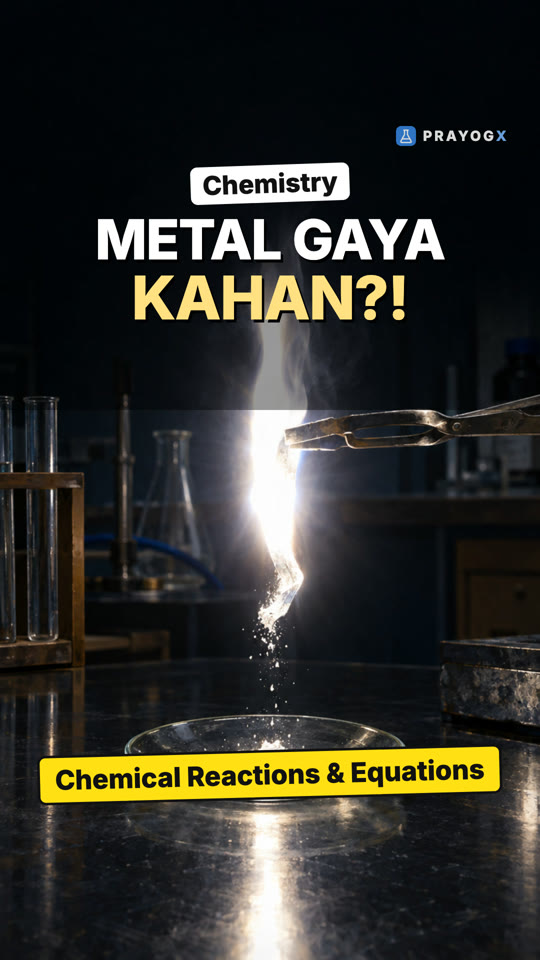
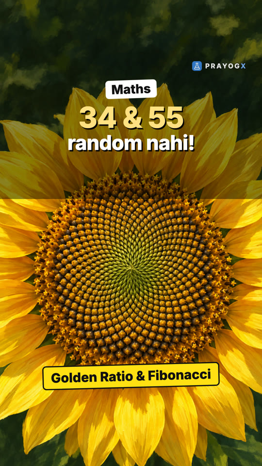

Choose your class
Every subject is laid out chapter by chapter. Each topic has a short Doodle video, notes you can download and a quick quiz.
Class 9Motion, matter, the cell and number systems: the foundations of school science and maths.ScienceMathematics21 videosClass 10Light, electricity, chemical reactions, life processes and the algebra and geometry of board year.ScienceMathematics9 videosClass 11Mechanics, thermodynamics, atomic structure, bonding, functions and the living world.PhysicsChemistryMathematicsBiology6 videosClass 12Electromagnetism, optics, modern physics, solutions and kinetics, calculus and genetics.PhysicsChemistryMathematicsBiology4 videosExtra / SupplementaryCurious questions beyond the syllabus: why the sky is blue, why we yawn, why 0.999… equals 1, and more.ScienceBiologyMathematics7 videos
Newest videos
 Roster Form and Set-builder FormTwo ways to write one set: Roster form lists the elements, Set-builder form states their common property. When to use each.Sets · Mathematics · simulation
Roster Form and Set-builder FormTwo ways to write one set: Roster form lists the elements, Set-builder form states their common property. When to use each.Sets · Mathematics · simulation Organic Chemistry: Chapter IntroductionParacetamol, plastic, cotton and DNA share one element: carbon. Why carbon forms millions of compounds, and what this chapter teaches.Organic Chemistry – Some Basic Principles and Techniques · Chemistry
Organic Chemistry: Chapter IntroductionParacetamol, plastic, cotton and DNA share one element: carbon. Why carbon forms millions of compounds, and what this chapter teaches.Organic Chemistry – Some Basic Principles and Techniques · Chemistry
Life Processes: Chapter IntroductionEven at rest your body keeps working: repair and maintenance need energy all the time. The four life processes: nutrition, respiration, transportation and excretion.Life Processes · Biology
Real Numbers: Chapter IntroductionBreak 360 down and only primes are left, the same ones whichever way you break it. The Fundamental Theorem of Arithmetic, HCF and LCM, and why √2 is irrational.Real Numbers · Mathematics
Chemical Reactions and Equations: Chapter IntroductionA burning magnesium ribbon leaves only white powder: the same atoms in a new arrangement. How to spot a reaction, write and balance its equation, and name its type.Chemical Reactions and Equations · Chemistry
Golden Ratio and the Fibonacci SequenceCount a sunflower's seed spirals and you often get 34 and 55. They come from the Fibonacci sequence, whose ratios settle on the golden ratio, 1.618…Patterns in nature · Mathematics